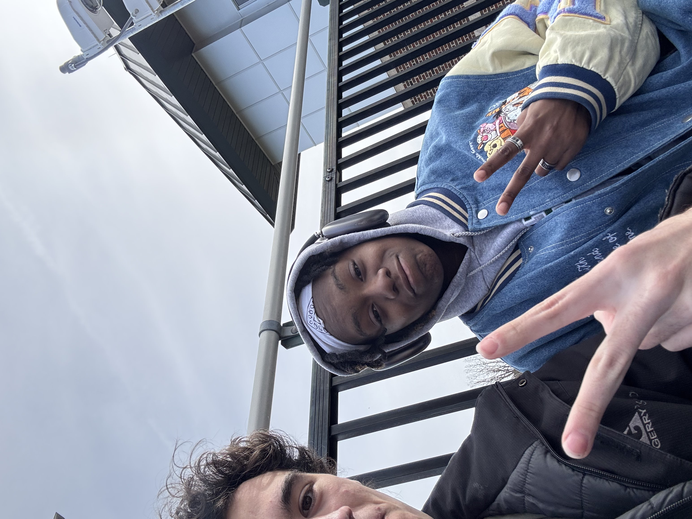
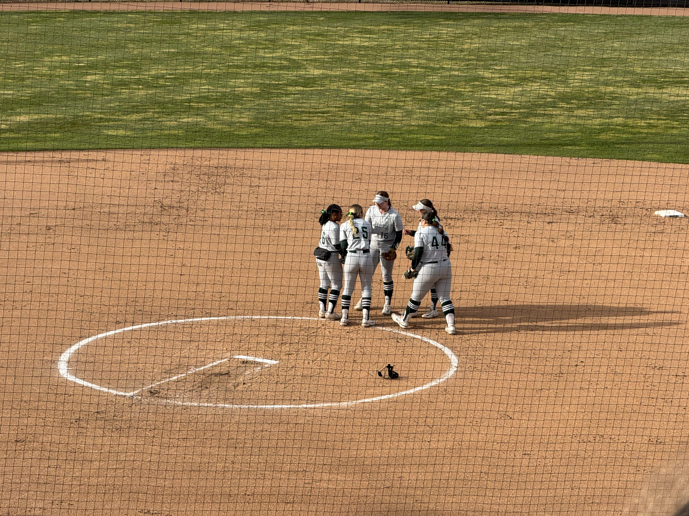

Game Day: Observations at the Jeff Ishbia Field at McLane Stadium
By: Tyler Burt
Event: MSU vs Ohio State | Ticket: free with student id | Date: March 21, 2025
I attended the MSU softball game against Ohio State on 3/21/25. It was a really windy day making it a little colder than I would’ve preferred but the sun shining provided a little warmth that really helped me get through the whole game. The stadium was surprisingly small and they had different rows or classes of seating, one being right behind homebase while the rest of the stadium was mostly bleachers. I observed that two teams were mainly composed of white females, the announcements and corporate sponsorships, and womens softball doesn’t get as much attention as male baseball in the professional world.
Social Issue 1: Race and ethnicity

I noticed that a large majority of the players on both teams were white however in contrast the head coaches of both teams were colored. This foreshadows possible more complex racial dynamic with in sports and leadership in sports.
I noticed no forms of racism or disrespect. That is not to say that racism doesn’t exist or impact the sport but it was not present at this game.
The stands were similar and had a lot more white spectators, however halfway through the game more people of color showed up to balance out spector demographic. This is interesting because in contrast a majority of the players were white.
In Race and Ethnicity Coakely he talks about how often the field and players may look homogenous, however looking at the leadership positions exposes the deeper racial dynamics in many sports. Showing although the most of the players are white and look the same the fact that the head coaches are both people of color means there might be a more complex racial issue behind the scenes even if it is not observed out right
Social Issue 2: Class and Corporatism
While at the game I noticed a couple of traditions like every time we entered a new inning or the teams would switch from outfield to batting they would have a moment to talk about the sponsors of msu athletics. This only serves to highlight the commercial aspect of the event.
I also noticed another interesting tradition was a tee shirt toss where they gave out msu merch and even gift cards to the spectators further showing the commercial and economical asspect of sporting events
Interestingly, even foul balls and home runs were sponsored by specific companies, showcasing the pervasive influence of corporate branding.
I noticed that when my friend went to get popcorn from the concession stand it was pretty expensive and we couldn’t use our msu combos like at msu football games.
I noticed there were also different rows of seats that were closer to homebase where most of the msu fans were during the game. I don't know however if you needed to pay extra or I just couldn’t find the entrance but it seemed like only family members and friends were sitting there.
Social Issue 3: Gender

The women’s collegiate softball scene is substantial, yet it lacks the visibility and attention afforded to men’s baseball. This disparity raises questions about societal perceptions of gender in sports.
Softball is often stereotyped as a sport exclusively for women, despite the existence of men’s softball teams and leagues. This misconception perpetuates gender biases within the sport.
There is also a significant pay gap between professional female softball players in the National Pro Fastpitch (NPF) league and male players in Major League Baseball (MLB). This disparity reflects broader systemic inequalities in professional sports.
While no overt sexism or gender-based comments were observed during the game, the limited professional opportunities and low pay for female athletes highlight the challenges they face beyond collegiate sports.
Does Sport Reflect Society?
Sports mirror society by exposing underlying racial, gender, and economic dynamics. Despite predominantly white players, diverse coaching indicates complex power structures. Extensive sponsorships and costly concessions highlight commercial influences, while the gender disparity in professional opportunities underscores broader inequalities. Overall, the game reflects societal norms and challenges, demonstrating that sport both mirrors and magnifies existing social issues.
Sources
Lopez, J. (2020). *Sport as Political Resistance*. NYU Press, New York.
Messner, M. (1992). *Power at Play: Sports and the Problem of Masculinity*. Beacon Press, Boston.
Coakley, J. (2017). *Sports in Society: Issues and Controversies*. McGraw-Hill Education, New York.
Your Name. (2025, March 10). Personal photo of yourself at the game. Los Angeles, CA.
Your Name. (2025, March 10). Personal photo of concession prices. Los Angeles, CA.
Your Name. (2025, March 10). Personal photo of BLM jersey. Los Angeles, CA.
Your Name. (2025, March 10). Personal photo of cheerleaders. Los Angeles, CA.